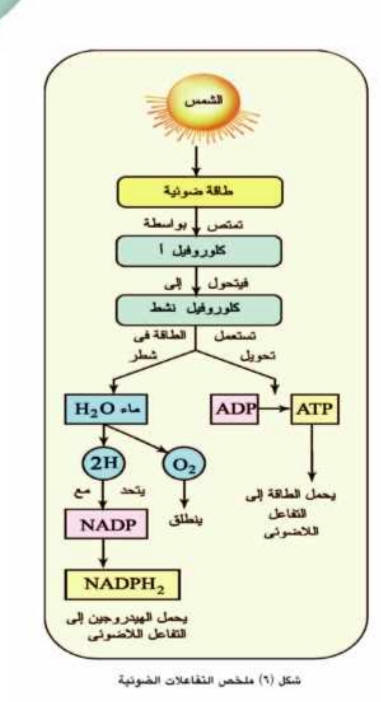
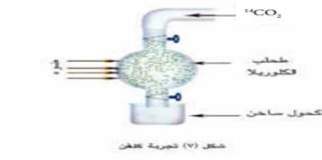
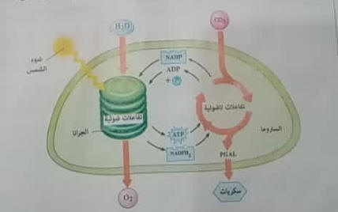

التغذية الذاتية
التغذية في النباتات الخضراء
عرفنا فيما سبق أن التغذية الذاتية هي إحدى طرق التغذية التي تتميز بها النباتات
الخضراء حيث تقوم خلاياها ببناء المركبات الغذائية العضوية عالية الطاقة التي
تحتاجها لبناء جسمها مثل الموادالكربوهيدراتية والدهنية والبروتينية من مواد غير
عضوية بسيطة التركيب تستمدها من بيئتها وهي الماء وثاني أكسيد الكربون والأملاح
المعدنية مستخدمة الطاقة الضوئية للشمس في عملية البناءالضوئي، وعلى ذلك فهناك
عمليتان مهمتان في عملية التغذية الذاتية التي يقوم بها النبات الأخضروهما عملية
امتصاص الماء والأملاح وعملية البناء الضوئی.
أولا: عملية امتصاص الماء والاملاح
يتم امتصاص الماء والأملاح المعدنية في
النباتات الخضراء الراقية من التربة عن طريق
الشعيرات الجذرية في المجموع الجذرى
للنبات ثم تنتقل من خلية إلى أخرى في اتجاه
الأوعية الناقلة.
الشعيرة الجذرية
تركيب الشعيرة الجذرية :
الشعيرة تمثل امتداد لخلية واحدة من
خلايا الطبقة الوبرية (البشرة) ويصل طولها
حوالي 4مم والشعيرة الجذرية مبطنة من
الداخل بطبقة رقيقة من السيتوبلازم بها النواة وبها فجوة عصارية كبيرة وعمر الشعيرة
الجذرية
لا يتجاوز بضعة أيام أو أسابيع لأن خلايا البشرة في الجذر تتمزق بين حين وآخر وتعوض
باستمرار
ملاءمة الشعيرات الجذرية لوظيفتها :
*جدرها رقيقة تسمح بنفاذ الماء والأملاح خلالها.
* عددها الكبير وامتدادها خارج الجذر .
*تركيز المحلول داخل فجوتها العصارية أكبر من تركيز محلول التربة مما يساعد على
انتقال
الماء من التربة إليها.
*تفرز الشعيرة الجذرية مادة لزجة تساعدها على التغلغل والانزلاق بين حبيبات التربة
والالتصاق بها وبذلك تساعد على تثبيت النبات.
آلية امتصاص الماء
تفرز الشعيرة الجذرية مادة لزجة تساعدها على التغلغل والانزلاق بين حبيبات التربة
والالتصاق بها وبذلك تساعد على تثبيت النبات.
تعتمد هذه الآلية على عدة ظواهر فيزيائية هي:
1-
خاصية الانتشار
.
هي تحرك الجزيئات أو الأيونات من منطقة ذات تركيز عال إلى منطقة ذات تركيز منخفض،
وذلك يرجع إلى الحركة الذاتية المستمرة لجزيئات المادة المنتشرة مثل انتشار نقطةكأس
بها ماء.
٢-خاصية النفاذية
.
تختلف جدر الخلايا وأغشيتها في قدرتها على النفاذية فالجدر السيليلوزية تنفذ كل من
الماءوأيونات الأملاح المعدنية، بينما الجدر المغطاة بالسيوبرين والكيوتين واللجنين
فلا تنفذ الماءوالأملاح، أما الأغشية البلازمية فهي أغشية شبه منفذة كما أنها أغشية
اختيارية النفاذية ، فهي رقيقة فيها ثقوب دقيقة جدا لها خاصية تحديد مرور المواد
خلالها فقد تمر خلالها بعض المواد بصورة حرة وطليقة ، وأخرى تمر ببطء بينما تمنع
نفاذ مواد أخرى
٣-النفاذيةالاختيارية
:-
فهي تنفذ الماء بينما تحدد نفاذ كثير من الأملاح ، وتمنع نفاذالسكر والأحماض
الأمينية ذات الجزيئات كبيرة الحجم.
٤-الخاصة
الأسموزية.
هي مرور الماء خلال الغشاء شبه المنفذ من منطقة ذات تركيز عال للماء إلى منطقة ذات
تركيزمنخفض للماء، ويسمى الضغط الذي يسبب مرور الماء خلال الأغشية شبه المنفذة
الضغط الاسموزي.
٥-خاصة التشرب
.
إن الدقائق الصلبة وخاصة الدقائق الغروية لها القدرة على امتصاص الماء فتزداد في
الحجم وتنتفخ وتمتص جدر خلايا النبات الماء بهذه الخاصية، ومن المواد الغروية
المحبة للماء في النبات وتتضح فيها هذه الخاصية السيليلوز والمواد البكتينية
وبروتينات البروتوبلازم
وفي ضوء الحقائق السابقة يمكن تفسير كيف يتم امتصاص الجذر للماء ، إذا تحيط
بالشعيرات
الجذرية طبقة غروية تلتصق بها حبيبات التربة بما عليها من أغشية مائية وذائبات
فتتشرب الجدر البلازمية بالماء حيث أن العصير الخلوي للشعيرة الجذرية أكثر تركيزا
من محلول
العصير الخلوي للشعيرة الجذرية أكثر تركيزا من محلول التربة نظرا لوجود السكر ذائبا
في العصير الخلوي. وعلى ذلك يكون تركيز الماء في محلول التربةأعلى منه في الفجوة
العصارية، ولذلك ينتشر الماء بالخاصية الأسموزية من التربة إلى خلايا البشرة، ومن
ثم ينتشر الماء بنفس الطريقة إلى خلايا القشرة ويستمر في تحركه على هذا النمط حتى
يصل إلى أوعية الخشب في مركز الجذر.
امتصاص الأملاح المعدنية
العناصر الغذائية الضرورية للنباتات الخضراء
تمكن العلماء عن طريق إجراء تجارب متنوعة من إثبات أن النبات يحتاج إلى عناصر
ضروريةغير الكربون والهيدروجين والأكسجين يمتصها عن طريق الجذور ويؤدي نقصها إلى
اختلال نموه الخضري أو توقفه أو إلى عدم تكوين الأزهار أو الثمار.
تنقسم المغذيات الي :-
１-
المغذيات الكبرى
ويحتاج النبات لهذه العناصر بكميات غير قليلة وهي سبعة عناصر:
النيتروجين – الفوسفور – البوتاسيوم – الكالسيوم – المغنسيوم – الكبريت – الحديد.
２-
المغذيات الصغرى
ويحتاج إليها النبات بكميات صغيرة جدا
لاتزيد على بضع ملليجرامات في اللتر وتسمى لذلك
بالعناصر الأثرية وهي : المنجنيز – الخارصين – البورون – الألومنيوم – الكلور –
النحاس –
الموليبدينم – اليود
وقد ثبت أن بعض هذه العناصر تعمل كمنشطات للإنزيمات.
تعمل أملاح النترات والفوسفات والكبريتات على تحويل الكربوهيدرات إلى بروتينات،
ويدخل الفوسفور في تكوين المركبات الناقلة للطاقة ويدخل الحديد في تكوين بعض
الانزيمات المساعدةاللازمة لإتمام عملية البناء الضوئی
آلية امتصاص الأملاح
تعتمد آلية امتصاص الأملاح على الظواهر الآتية:-
١-الانتشار .
تنتقل أيونات العناصر من الوسط الأعلى تركيا إلى الوسط الأقل تركيا نتيجة
حركةالأيونات الحرة والمستمرة حيث تنتشر دقائق الذائبات مستقلة عن الماء و عن بعضها
البعض على صورة أيونات موجبة تسى كاتيونات مثل
Ca ,K
وأيونات سالبة تسمى أثيونات مثل,CI),
(NO), (NO,, (SO)
وتتحرك هذه الذاتبات بالانتشار من محلول التربة وتنفذ داخل الجدران السيليلوزية قد
يحدث تبادل للكاتيونات فمثلا يخرج أيون الصوديوم "Na
من الخلية ويدخل البوتاسيوم
K0
بدلا منه.
٢-النفاذية الاختيارية.
عندما تصل الأيونات إلى الغشاء البلازمی شبه المنفذ يختار بعضها ويسمح لها بالمرور
حسب حاجة النبات ولا يسمح للبعض الأخر بصرف النظر عن حجم الأيونات أو تركيزها أو
شحنتها۔
٣-النقل النشط.
في بعض الأحيان تنتشر الأيونات من محلول التربة حيث تركيزها منخفض إلى داخل الخلية
حيث تركيزها مرتفع ، ويلزم طاقة لإجبار هذه الأيونات على الانتشار ضد التدرج في
التركيز.
ثانيا :-
عملية البناء الضوئي
تعتبر الأوراقالخضراء في المراكزالأساسيةلعملية البناءالضوئي لأنها تحتویعلى
البلاسستيدات الخضراء في النباتات الراقية وقد تساهم السيقان العشبيةالخضراء بقدر
في هذه العملية لاحتوائها على أنسجة كلورنشيعية بها البلاستيدات الخضراءعشاء مزدوج.
تركيب البلاستيدة الخضراء:-
تبدو البلاستيدات الخضراء في النباتات الراقيةككتلة متجانسة ستروماعلى شكل عدسة
محدبة وذلك تحت الميكروسكوب الضوئي ولكن
بدراسة البلاستيدة الخضراء..
بالميكروسكوب الإلكتروني ثبت أنها تتكون من -غشاء مزدوج.
-حبيبان نشا.
-خارجی رقیق سمكه حوالی ۱۰ نانو.
- وبداخله النخاع أو الستروما....يتركب من مادة بروتينية عديمة اللون وينتشر في هذا
النخاع حبيبات قرصية الشكل ويبلغ قطر الحبيبة حوالي 5 ميكرون وسمكها حوالي 7 میکرون
وهي تنظم في بعضها فوق بعض وهي التي تختص بحمل الأصباغ التي تمتص الطاقة الضوئية
والقرص مجوف من الداخل وقد تمتد حواف بعض الأقراص خارج حدود الحبيبة لتلتقى بحواف
قرص آخر في تحتوي البلاستيدة الخضراء على أربع أصباغ أساسية كما هي...:-
*کلوروفيل أ.
*لونه أخضر مزرق نسبتهما حوالی ۷۰٪
*کلوروفيل ب.
*لونه أخضر مصفرنسبته حوالی ۲۰٪
*کاروتین.
*لونه أصفر برتقالی نسبته حوالي 7.5.

لذلك يغلب اللون الأخضر على ألوان الأصباغ الأخرى في البلاستيدة. ويختص الكلوروفيل
بامتصاص الطاقة الضوئية اللازمة لعملية البناء الضوئي. وتتكون حبيبات النشا داخل
البلاستيدةالخضراء بأعداد كبيرة وتكون صغيرة الحجم نظرا لأنها لا تلبث أن تتحلل إلى
سكر لنقله إلى أعضاء أخرى تحت ظروف معينة. وجزئ الكلوروفيل معقد التركيب والقانون
الجزيئي لكلوروفيل (أ) هو
وتوجد ذرة المغنسيوم في مركز الجزيء
ويعتقد أن قدرة الكلوروفيل على امتصاص
الضوء له علاقة بوجود المغنسيوم في تركيبه.
تركيب الورقة : تتركب ورقة النبات من ثلاثة أنسجة أساسية هي:
١-البشرتان
العليا والسفلى تتركب كل منها من : طبقة سمكها خلية واحدة من خلايا بارانشيمية
برميلية الشكل متلاصقةخالية من الكلوروفيل تتخللها الثغور والجدار الخارجي لها مغطى
بطبقة من الكيوتين ماعدا الثغور
٢- النسيج المتوسط.
يقع بين البشرتين العليا والسفلى وتخترقه العروق ويتكون من :
(أ)
الطبقة العمادية
تتكون من صف واحد من خلايا بارنشيمية
مستطيلة الشكل عمودية على سطح البشرة العليا
ومزدحمة بالبلاستيدات الخضراء التي ترتب نفسها في الجزء العلوي من الخلايا العمادية
لتستقبل أكبر قدر من الأشعة الضوئية.
ب) الطبقة الأسفنجية
Spongy Layer
توجد أسفل الطبقة العمادية و تتركب من خلايا بار نشيمية غير منتظمة الشكل تفصلها
مسافات بينية واسعة وتحتوى خلاياها على بلاستيدات خضراء بنسبة أقل من الخلايا.
آلية البناء الضوئي
ما مصدر الأكسجين المنطلق في عملية البناء الضوئي؟
إن أول من أوضح مصدر الأكسجين في عملية البناء الضوئي العالم الأمريكي فان نیل
بجامعة ستانفورد، وقد توصل إلى ذلك بدراسة البناء الضوئي في بكتريا الكبريت الخضراء
والأرجوانية ، وهذه البكتريا ذاتية التغذية تحتوي على كلوروفيل بكتیری( أبسط
ترکیبامن الكلوروفيل العادي) وهي تعيش في طين البرك والمستنقعات حيث يتوفر كبريتيد
الهيدروجين وهو مصدر الهيدروجين الذي تستعمله هذه البكتريا في اختزال ,CO
لبناء المواد الكربوهيدراتيه مع تحرر الكبريت.
وقد افترض فان نيل أن الضوء يعمل على تحليل كبريتيد الهيدروجين إلى هيدروجين وكبريت
ثم
يستعمل الهيدروجين في تفاعلات الاضوئية لاختزال
CO
إلى كربوهيدرات
وعلى هذا الأساس افترض أن التفاعلات الضوئية التي تجرى في النباتات الخضراء تكون
مشابهة لما يحدث في بكتريا الكبريت ولكن الضوء يحلل الماء إلى هيدروجين وأكسجين ثم
يستعمل
الهيدروجين لاختزال,CO
في سلسلة من التفاعلات لاتحتاج إلى وجود الضوء لإنتاج الكربوهيدرات.
لذلك افترض نيل أن الأكسجين المتحرر يأتي من الماء كما هو حال الكبريت الذي يتحرر
من 5,H

وفي عام 1941 قام فريق من العلماء في جامعة كاليفورنيا بتجارب لإثبات صحة نظرية فان
نیل، استعمل هؤلاء العلماء الطحلب الأخضر المسمى کوریلاChlorella
ووفروا له جميع
الظروف
المناسبة لعملية البناء الضوئی ولكن الماء
المستعمل كان به نظير الأكسجين 10 بدلا من
ثانيا:
التفاعلات الضوئيه.

وهي مجموعة التفاعلات التي تحدث في
أرضية البلاستيدة الخضراء « الستروماه
خارج الجرانا، حيث يتم تثبيت غاز ,CO
باتحاده مع الهيدروجين المحمول على
مركب
NADPH
وبمساعدةالطاقةالمختزنة في جزي
ATP
، وبذلك تتكون الموادالكربوهيدراتية
تجربه كلفن:-
Calvin
ومساعدوه في جامعة كاليفورنيا سنة
1949 من الكشف عن طبيعة التفاعلات الضوئية بعد اكتشاف نظير الكربون المشع 14C
فقد
وضعوا طحلب الكلوريلا في الجهاز شكل (۷) وأمدوه بغاز ,CO
به کربون مشع 14C
ثم أضئ المصباح لعدة ثوان ليسمح بحدوث البناء الضوئي ثم وضع الطحلب في كأس به کحول
ساخن لقتل
الخلية ووقف التفاعلات البيوكيميائية ثم فصلوا المركبات التي تكونت خلال عملية
البناء الضوئی
بطرق خاصة وكشفوا فيها عن الكربون المشع بعداد جيجر.
وقد أوضحت النتائج أنه عندما استمرت عملية البناء الضوئي لمدة ثانيتين فقط تكون
مركب ذو
ثلاث ذرات کربون وهو مايسمى فوسفوجليسر الدهید
PGAL
وهذا هو المركب الأول الثابت كيميائيا الناتج عن البناء الضوئي ويمكن أن يستعمل هذا
المركب لبناء الجلوكوز والنشا والبروتينات والدهون كما يمكن أن يستعمل كمركب عالى
الطاقة في التنفس الخلوي، ولقد أوضح كالفن أن تكوین السكر سداسي الكربون لم يتم في
خطوة واحدة ، بل من خلال عدة تفاعلات وسيطة حفزتها إنزيمات خاصة